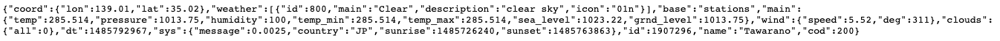

In order to retrieve weather data, the use of an external API must be used to pull current weather information.
OpenWeatherMap was chosen as the API of choice for this project due to the large amount of documentation available.
When calling the OpenWeatherMap API, it returns the following data in GeoJSON format:
 The aim of this webpage is to allow users to enter either a city name or latitude and longitude co-ordinates as a means of specifying the location for the current weather forecast. In order to do this, an if statement is used to determine that the search fields are populated with the required data for each search option. City Latitude and Longitude Error statement if fields are empty In order to pull data from the API, the required URL is concatenating with the fields which are inputting by the user. The URL differs for each search type. Key information is pulled from each array in the API return. For the purpose of this project we have chosen fields such as temperature, pressure, humidity and wind speed. The appropriate unit of measurement must also be concatenated onto the end of each return. First of all, the OpenWeatherMap documentation must be used to find out the unit which is returned by the API. Then simple HTML is used to add the appropriate symbol onto the data. A key differentiatior of weather data from other datasets is the visualiasation of weather conditions through the use of icons. Due to time constraints the built in OpenWeatherMap icons were used. This is done simply through concatenating the image link from the API with the use of weather codes returned from the API call. This page uses a Google Map to plot a marker at the location of the place which is inputted by the user. Therefore, the latitude and longitude which is returns by the API call, must be used when plotting the marker on the Google Map. This is done as follows: Finally, the zoom function is added to the marker by adding a listener for when the user clicks on the marker. This is useful as it allows the user to quickly zoom in to the map to ensure they typed in the correct city, and also view nearby city names which might be of interest to them.